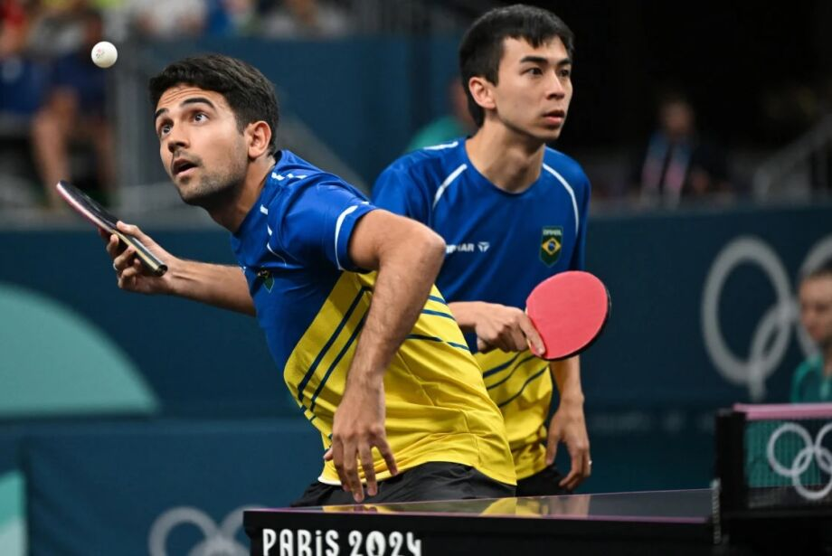
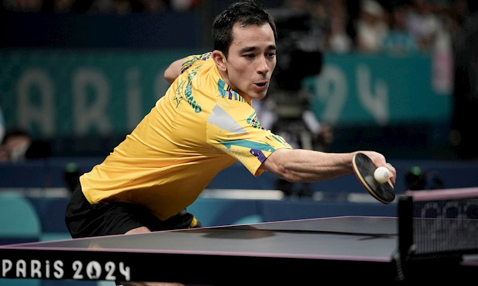

Você sabia que o tênis de mesa é um dos esportes mais praticados no Brasil — e, ao mesmo tempo, um dos menos falados? Apesar da fama de ser um "esporte de lazer", o tênis de mesa brasileiro carrega histórias de superação, talento e paixão que rivalizam com qualquer modalidade olímpica. Desde garagens e clubes de bairro até competições internacionais, milhares de brasileiros vêm transformando o que muitos chamam de "ping-pong" em um verdadeiro show de técnica e velocidade. O Brasil já revelou atletas que desafiaram gigantes asiáticos e europeus nas mesas do mundo, como Hugo Calderano, que rompeu barreiras e colocou o país no mapa da elite mundial. E o mais surpreendente? O tênis de mesa ainda está crescendo — com novos talentos surgindo nas escolas públicas, projetos sociais e centros de treinamento por todo o país. Quer descobrir como esse esporte vem conquistando corações, mesas e medalhas no Brasil? Então continue navegando — porque o jogo está só começando.
 